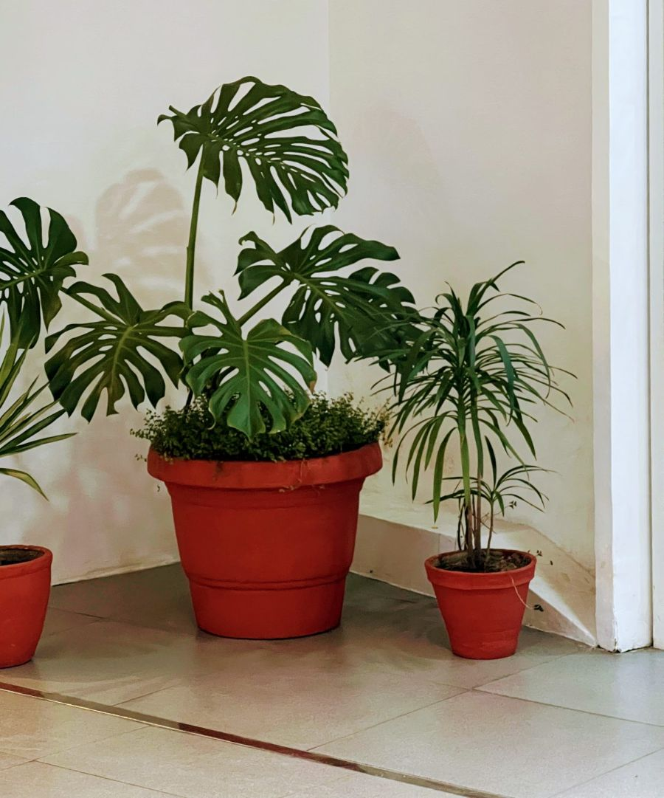
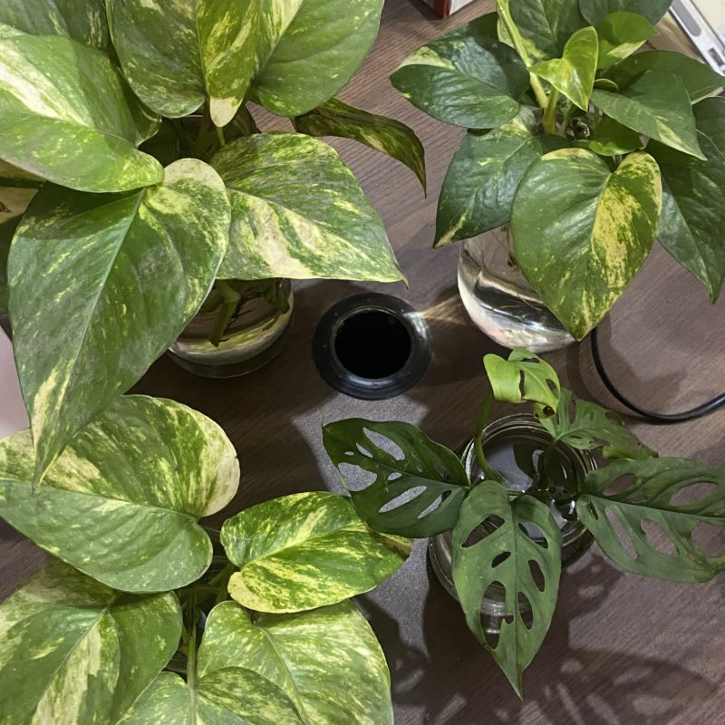

Water Wisely
Check the soil before watering. Water thoroughly when the plant's needs indicate it is time, and allow excess water to drain.
Get simple, personalized plant-care guidance through natural conversation. Ask about yellow leaves, watering, light, pests or a specific houseplant.

Type a plant-care question in your own words. GreenBuddy compares it with the questions it already knows and shows you the closest answer.
Six everyday habits that prevent most houseplant problems, whatever you grow.
Check the soil before watering. Water thoroughly when the plant's needs indicate it is time, and allow excess water to drain.
Match your plant to its light conditions. Bright indirect light suits many houseplants, while some species tolerate lower light.
Use a potting mix appropriate for your plant and a container that drains properly.
Yellowing, spots, curling, and drooping can indicate stress. Check soil moisture, light, pests, and recent environmental changes.
Inspect leaves and stems regularly. Isolate affected plants and identify the pest before choosing a treatment.
Consider repotting when roots crowd the pot, water drains unusually quickly, or growth is restricted.
GreenBuddy is an educational NLP mini-project that demonstrates how natural language processing can help users find relevant answers to common plant-care questions. It uses text preprocessing, TF-IDF vectorization, cosine similarity, and a predefined knowledge base to identify the most relevant response.
